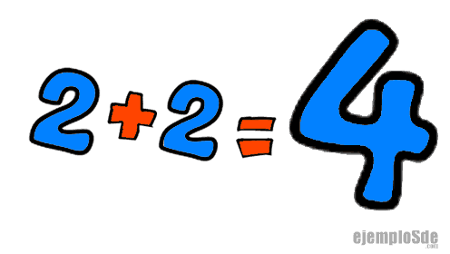

Matemáticas Básicas: sumaExplicaciones, ejemplos y ejercicios para aprender a sumar paso a paso |
|||||||||
| Inicio | Números | Suma | Resta | Multiplicación | División | Trigonometria | Geometría | Álgebra | Contacto | |||||||||
Cómo usar esta página
Consejos útiles
CuriosidadEl signo “+” se empezó a usar en Europa en el siglo XV, como una abreviación de la palabra latina et (“y”). |
¿Qué es la suma?La suma es una operación matemática que consiste en juntar o agregar cantidades. Es el punto de partida en el aprendizaje de la aritmética y se representa con el signo (+). Ejemplo: 3 + 4 = 7 Partes de una suma
Propiedades de la suma
Ejemplos prácticos
Errores comunes
Aplicaciones en la vida diaria
Ejercicios para practicar
CuriosidadesLa suma es la base de la multiplicación (que no es más que una suma repetida). En informática, los computadores realizan millones de sumas por segundo. Incluso en música y arte, “sumar” elementos permite crear obras más complejas. |
||||||||
|
© 2025 Matemáticas Básicas | Proyecto educativo en HTML puro |
|||||||||